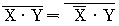
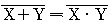
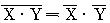
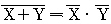
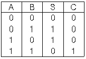
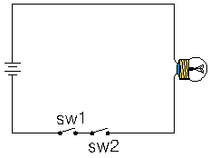
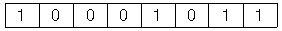
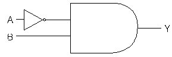
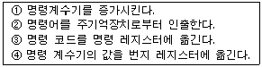
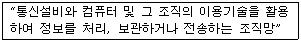

정보처리기능사 (2003-03-30 기출문제)
1과목: 전자 계산기 일반
1. 다음 식 중 드모르간(De Morgan)의 정리를 바르게 나타낸 것은?




(정답률: 74%)

2. 다음에 표시된 진리표가 나타내는 회로는?(단, 입력은 A, B이고 출력은 S(Sum)와 C(Carry) 이다.)

- AND 회로
- OR 회로
- 전가산기 회로
- 반가산기 회로
(정답률: 64%)
3. 다음 회로(Circuit)에서 결과가 "1" (불이켜진상태)이 되기 위해서는 sw1와 sw2는 각각 어떠한 값을 갖는가?

- A = 1, B = 1
- A = 0, B = 1
- A = 0, B = 0
- A = 1, B = 0
(정답률: 88%)
4. 입·출력 조작의 종료 및 입·출력의 착오에 의해서 발생되는 인터럽트(Interrupt)의 종류는?
- 외부 인터럽트
- 입·출력 인터럽트
- 프로그램 인터럽트
- 기계착오 인터럽트
(정답률: 74%)
5. 하나의 명령어가 2개의 오퍼랜드를 가지고 있으며, 처리할 데이터를 제1, 제2 오퍼랜드에 기억시키고 그 처리 결과를 제 1오퍼랜드에 기억시키므로 제 1오퍼랜드로 표시된 장소에 기억되어 있던 내용은 처리 후에 지워지게 되는 명령의 형식은?
- 1 어드레스(Address) 방식
- 2 메모리(Memory) 방식
- 2 어드레스(Address) 방식
- 3 어드레스(Address) 방식
(정답률: 65%)
6. 10진수 0.1875를 8진수로 변환하면?
- 0.17(8)
- 0.15(8)
- 0.14(8)
- 0.16(8)
(정답률: 42%)
7. 입력장치로 사용될 수 없는 것은?
- OMR
- MICR
- OCR
- Line printer
(정답률: 71%)
8. 1면에 100개의 트랙을 사용할 수 있는 양면 자기디스크에서 1트랙은 4개의 섹터로 되어 있으며 섹터당 320 word를 기억시킬 수 있다고 할 경우, 이 디스크는 몇 word를 기억시킬 수 있는가?
- 256,000
- 372,000
- 124,000
- 254,000
(정답률: 62%)
9. 기억장치에서 데이터를 꺼내거나 주변기기에서 데이터를 얻는데 요하는 시간으로서, 데이터를 요구하는 명령을 실행한 순간부터 데이터가 지정한 장소에 넣어지는 순간까지 소요되는 시간은?
- 싸이클(Cycle) 시간
- 엑세스(Access) 시간
- 계산(Calculate) 시간
- 메모리(Memory) 시간
(정답률: 62%)
10. CPU에서 명령이 실행되는 순서를 제어하거나 특정 프로그램에 관련된 컴퓨터 시스템의 상태를 나타내고 유지하기 위한 제어 워드로서 실행중인 CPU의 상황을 나타내는 것은?
- PC
- MAR
- MBR
- PSW
(정답률: 71%)
11. 산술 및 논리연산의 결과를 일시적으로 기억하는 레지스터(Register)는?
- Accumulator
- Memory Buffer Register
- Memory Address Register
- Instruction Register
(정답률: 66%)
12. 하나의 실리콘 칩 상에 10만개 이상의 반도체 장치를 포함하고 있는 집적회로로서 "초고밀도 집적회로"라고 불리우는 것은?
- VLSI
- SSI
- LSI
- MSI
(정답률: 50%)
13. 8 bit 컴퓨터에서 부호와 절대치 방식으로 수치 자료를 표현했을 때, 기억된 값은 얼마인가?

- 11
- -11
- -12
- 12
(정답률: 72%)
14. 명령어는 연산자 부분과 주소 부분으로 구성되는데 주소(Operand) 부분의 구성 요소가 아닌 것은?
- 데이터 종류
- 명령어 순서
- 데이터가 있는 주소를 구하는데 필요한 정보
- 데이터의 주소자체
(정답률: 43%)
15. 그림과 같은 논리회로에서 A의 값이 1010, B의 값이 1110일 때 출력 Y의 값은?

- 1010
- 1111
- 0100
- 1001
(정답률: 75%)
16. 2진수 1001을 Gray Code로 변환하면?
- 1110
- 1010
- 1001
- 1101
(정답률: 62%)
17. 주소 부분에 있는 값이 실제 데이터가 있는 실제 기억장치 내의 주소를 나타내며 단순한 변수 등을 액세스 하는데 사용되는 주소지정 방식은?
- 상대 Address
- 절대 Address
- 간접 Address
- 직접 Address
(정답률: 54%)
18. 아래의 보기는 명령어 인출 절차를 보인 것이다. 올바른 순서로 나열된 것은?

- ① → ② → ③ → ④
- ① → ③ → ④ → ②
- ④ → ② → ① → ③
- ③ → ② → ① → ④
(정답률: 48%)
19. 십진수 -8을 2의 보수 표현으로 바르게 나타낸 것은?
- 11110111(2)
- 11111000(2)
- 00001000(2)
- 01110111(2)
(정답률: 46%)
20. 정보처리 속도 단위 중 초당 100만 개의 연산을 수행한다는 의미의 단위는?
- LIPS
- MFLOPS
- KIPS
- MIPS
(정답률: 78%)
2과목: 패키지 활용
21. 데이터베이스 관리자(DBA)의 설명으로 가장 적합한 것은?
- 데이터베이스의 운용을 원활하게 하기 위해 설계된 데이터베이스 기계
- 데이터 조작어를 이용하여 데이터베이스의 응용이 가능한 사람
- 데이터베이스 관리 시스템의 관리 및 운영을 책임지는 사람
- 단말기에서 질의어를 이용하여 데이터베이스를 이용하는 사람
(정답률: 67%)
22. 기업체의 발표회나 각종 회의 등에서 빔 프로젝트 등을 이용하여 제품에 대한 소개나 회의 내용을 요약 정리하여 청중에게 효과적으로 전달하기 위한 도구를 의미하는 것은?
- 데이터베이스
- 프레젠테이션
- 스프레드시트
- 워드프로세서
(정답률: 85%)
23. 윈도용의 다른 응용프로그램에서 그림의 전체나 일부분을 잘라 자신이 사용중인 스프레드시트에 삽입하려고 한다. 이때 임시로 사용되는 장소를 무엇이라고 하는가?
- Sheet
- Clipboard
- Class
- SQL
(정답률: 66%)
24. DBMS의 장점이 아닌 것은?
- 데이터 보안성 보장
- 데이터 중복성 최대화
- 데이터 공유
- 데이터 무결성 유지
(정답률: 80%)
25. 데이터베이스에서 사용되는 용어 중 데이터의 크기가 작은 것에서 부터 큰 순서로 이루어진 것은?
- 데이터 → 필드 → 레코드 → 파일
- 데이터 → 레코드 → 필드 → 파일
- 데이터 → 레코드 → 파일 → 필드
- 데이터 → 필드 → 파일 → 레코드
(정답률: 58%)
26. 스프레드시트의 활용 영역으로 거리가 먼 것은?
- 슬라이드쇼와 같은 DEMO(Demonstration) 분야
- 성적증명서와 같은 성적관리 분야
- 가계부와 같은 개인자료관리 분야
- 대차대조표와 같은 회계분야
(정답률: 76%)
27. SQL 명령문 중 "DROP TABLE 학생 RESTRICT" 의 의미가 가장 적절한 것은?
- 학생 테이블만을 제거한다.
- 학생 테이블을 제거할지의 여부를 사용자에게 다시 물어본다.
- 학생 테이블과 이 테이블을 참조하는 다른 테이블도 함께 제거한다.
- 학생 테이블이 다른 테이블에 의해 참조중이면 제거하지 않는다.
(정답률: 55%)
28. 상품(상품명, 단가, 수량) 테이블에 대하여 필드명 단가(1차 정렬키)는 오름차순, 필드명 수량(2차 정렬키)은 내림차순으로 검색하려고 한다. 이에 대한 SQL 문의 표기가 옳은 것은?
- SELECT 상품명, 단가, 수량 FROM 상품 ORDER BY 단가 ASC, 수량 DESC;
- SELECT 상품명, 단가, 수량 FROM 상품 ORDER BY 단가 DESC, 수량 ASC;
- SELECT 상품명, 단가, 수량 FROM 상품 ORDER BY 단가 ASC AND 수량 DESC;
- SELECT 상품명, 단가, 수량 FROM 상품 ORDER TO 단가 DESC, 수량 ASC;
(정답률: 53%)
29. 테이블 구조를 변경하는데 사용하는 SQL 명령은?
- ALTER TABLE
- DROP TABLE
- CREATE INDEX
- CREATE TABLE
(정답률: 74%)
30. SQL 문의 형식으로 적당하지 않은 것은?
- DELETE - FROM - WHERE
- INSERT - INTO - VALUES
- UPDATE - FROM - WHERE
- SELECT - FROM - WHERE
(정답률: 65%)
3과목: PC 운영 체제
31. 도스(MS-DOS)에서 외부 명령어에 대한 설명으로 옳은 것은?
- 독립된 파일의 형태로 DIR 명령으로 확인이 가능하다.
- 주기억장치에 항상 올려져 있는 명령어이다.
- COMMAND.COM이 주기억장치에 올려짐으로써 사용할 수 있다.
- DIR은 외부 명령어의 하나이다.
(정답률: 47%)
32. 유닉스(UNIX) 명령어 중 압축관련 명령어인 TAR 명령의 옵션에 대한 설명으로 옳지 않은 것은?
- R : 새로운 파일을 추가한다.
- X : 지정된 파일의 내용을 테이프로부터 파일 시스템에 기록한다.
- C : 주어진 테이프를 새로운 것으로 간주하여 파일을 저장한다.
- V : 부 디렉토리까지 압축한다.
(정답률: 33%)
33. 운영체제를 제어 프로그램(Control Program)과 처리 프로그램(Processing Program)으로 분류했을 때, 제어 프로그램에 해당하지 않는 것은?
- 작업 제어 프로그램(Job Control Program)
- 감시 프로그램(Supervisor Program)
- 데이터 관리 프로그램(Data Management Program)
- 문제 프로그램(Problem Program)
(정답률: 64%)
34. 도스(MS-DOS)에서 디스크의 상태를 점검하는 명령은?
- FORMAT
- DELTREE
- CHKDSK
- PROMPT
(정답률: 77%)
35. "윈도 98"의 특징으로 가장 거리가 먼 것은?
- 모든 파일은 파일명 없이 아이콘으로 되어 있다.
- GUI(Graphic User Interface) 방식의 운영체제이다.
- 멀티 태스킹(Multi-Tasking)을 지원한다.
- 마우스 버튼을 눌러 원하는 작업을 실행할 수 있다.
(정답률: 68%)
36. "윈도 98"의 제어판에서 할 수 없는 작업은?
- 시작메뉴 프로그램 설정
- 시스템의 날짜 변경
- 모뎀의 추가 및 설정
- 키보드와 관련된 환경설정
(정답률: 30%)
37. 운영체제의 발전 과정에서 기억소자는 진공관을 사용하였으며, 간단한 일괄처리가 가능한 세대는?
- 2세대(1960년대)
- 0세대(1940년대)
- 1세대(1950년대)
- 3세대(1970년대)
(정답률: 47%)
38. 페이지 대체 알고리즘에서 계수기를 두어 가장 오랫동안 참조되지 않은 페이지를 교체할 페이지로 선택하는 방법은?
- LFU
- LRU
- FIFO
- OPT
(정답률: 59%)
39. UNIX에서 현재 실행중인 프로세스를 삭제하기 위한 명령어는?
- stop
- kill
- dd
- del
(정답률: 66%)
40. "윈도 98"의 탐색기에서 비연속적인 여러개의 파일을 한꺼번에 선택하기 위해 사용하는 키는?
- Ctrl
- Alt
- Shift
- Tab
(정답률: 71%)
41. 현재 사용중인 DOS의 버전을 화면에 표시할 때 사용하는 명령은?
- CLS
- DEL
- DIR
- VER
(정답률: 53%)
42. "윈도 98"에서 제어판에 있는 디스플레이 항목의 기능이 아닌 것은?
- 마우스 포인터의 모양 변경
- 해상도 지정
- 화면 보호기능
- 배경무늬 변경
(정답률: 70%)
43. 도스(MS-DOS)에서 시스템 부팅시 반드시 필요한 파일이 아닌 것은?
- MSDOS.SYS
- CONFIG.SYS
- IO.SYS
- COMMAND.COM
(정답률: 63%)
44. "윈도 98"에서 새로운 하드웨어를 장착하고 시스템을 가동시키면 자동으로 하드웨어를 인식하고 실행하는 기능은?
- Interrupt 기능
- Auto & play 기능
- Plug & play 기능
- Auto & plug 기능
(정답률: 78%)
45. "윈도 98"에서 설치된 윈도용 응용 프로그램을 삭제하는 방법 중 가장 바람직한 방법은?
- 윈도우즈 탐색기로 삭제할 응용 프로그램 폴더를 찾아서 키를 누른다.
- 내 컴퓨터 창을 열어서 삭제할 응용 프로그램의 실행 파일을 휴지통으로 Drag & Drop 한다.
- 제어판에서 프로그램 추가/삭제 아이콘을 이용하여 삭제한다.
- 시작 메뉴를 클릭하여 프로그램 메뉴를 선택한 후 삭제할 응용 프로그램을 휴지통으로 Drag & Drop 한다.
(정답률: 64%)
46. "윈도 98"에서 지워진 파일이 임시로 보관되는 곳은?
- 휴지통
- 내 문서
- 내 컴퓨터
- 내 서류 가방
(정답률: 83%)
47. 도스에서 DIR 명령은 현재 디렉토리와 파일등에 관한 정보를 표시해 주는 명령이다. 이 명령의 옵션(Option) 중 하위 디렉토리의 정보까지 표시해 주는 명령은?
- DIR/P
- DIR/W
- DIR/A
- DIR/S
(정답률: 44%)
48. 다음 중 업무처리를 실시간 시스템(Real-Time System)으로 처리할 필요가 없는 것은?
- 적의 공중 공격에 대비하여 동시에 여러 지점을 감시하는 시스템
- 교통 관리, 비행조정 등과 같은 외부 상태에 대한 신속한 제어를 목적으로 하는 시스템
- 가솔린 정련에서 온도가 너무 높이 올라가는 경우 폭발을 방지하기 위해 조치를 취하는 시스템
- 고객명단 자료를 월단위로 묶어 처리하는 시스템
(정답률: 73%)
49. Which is not Operating System?
- PASCAL
- UNIX
- DOS
- WINDOWS 98
(정답률: 63%)
50. Which of the following is correct answer about Batch Processing System?
- Data processing system which requires immediate process when the data generated like seat reservation for airplane or train.
- The method that process data collected until it become some quantity or for some period of time at one time.
- A terminal like device equipped with button, dials that enables the operator to communicate with computer.
- The system which has many processors is to program dividing into more than two jobs concurrently under control processors.
(정답률: 50%)
4과목: 정보 통신 일반
51. 통신망을 질적으로 고도화하기 위하여 전화, Telex, Fax 등 서로 다른 각각의 통신망을 디지탈통신방식으로 통합한 통신망은?
- 종합정보 통신망
- 텔리텍스 통신망
- 무선호출 통신망
- 영상회의 통신망
(정답률: 40%)
52. 변복조기의 변조방식이 아닌 것은?
- 다주파부호(MFC)변조
- 주파수편이변조(FSK)
- 복합변조(QAM)
- 위상변조(PM)
(정답률: 33%)
53. LAN망을 구성시 거의 채택하지 않는 네트워크 형태는?
- 스타(Star)형
- 링(Ring)형
- 그물(Mesh)형
- 버스(Bus)형
(정답률: 48%)
54. 전송 주파수 대역폭과 통신 속도와의 관계는?
- 통신속도 제곱에 반비례한다.
- 관계없다.
- 서로 비례한다.
- 서로 반비례한다.
(정답률: 52%)
55. PC 터미널이 8개가 설치된 시스템에서 각 터미널 상호간을 망형망으로 결선하려면 필요한 회선수는?
- 16회선
- 42회선
- 28회선
- 8회선
(정답률: 47%)
56. 광통신 케이블의 전송방식은 빛의 어떤 성질을 이용하는가?
- 굴절
- 산란
- 직진
- 전반사
(정답률: 57%)
57. 통신망을 통해 통신회선이 사용되지 않는 심야시간을 이용하여 공중시스템 및 시설시스템을 검침하는 서비스는?
- 인트라넷(Intranet)
- IMT-2000
- Cyber 21
- 텔리메터링(Telemetering)
(정답률: 36%)
58. 두개의 지점 사이에서 정보를 보내거나 받을 수는 있으나 동시에 정보를 주고받을 수 없는 통신회선은?
- Full Duplex
- High Duplex
- Simplex
- Half Duplex
(정답률: 53%)
59. 통신제어장치의 기능과 관계 없는 것은?
- 전기적 결합
- 오류 검출,제어
- 회선의 감시
- 데이터 처리
(정답률: 31%)
60. 다음 설명이 나타내는 가장 적합한 용어는?

- 초고속교환망
- 정보통신망
- 전자계산회선망
- 정보처리망
(정답률: 51%)
드모르간의 정리는 논리학에서 두 개의 명제에 대한 부정의 결합을 다시 원래의 명제로 바꾸는 법칙입니다. 이를 수식으로 나타내면 다음과 같습니다.
¬(A ∧ B) ≡ ¬A ∨ ¬B
¬(A ∨ B) ≡ ¬A ∧ ¬B
즉, 두 개의 명제 A와 B에 대해 A와 B가 모두 참일 때 전체 명제가 거짓이라면, A와 B 중 하나라도 거짓이라면 전체 명제는 참이라는 것입니다.
이 중에서 ""는 두 개의 명제에 대한 부정의 결합을 나타내는 수식입니다. 이를 드모르간의 정리에 따라 다시 원래의 명제로 바꾸면 "